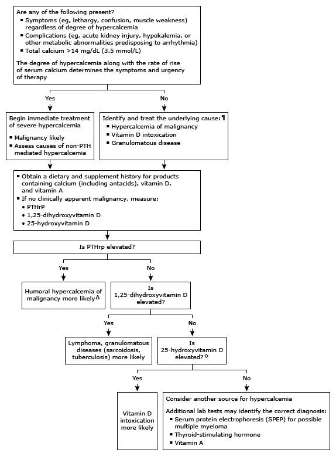

PTH: parathyroid hormone; PTHrP: parathyroid hormone-related peptide.
* The normal range for serum calcium is approximately 8.6 to 10.2 mg/dL (2.15 to 2.54 mmol/L), and for intact PTH approximately 10 to 65 pg/mL (1.1 to 6.9 pmol/L). A low-normal PTH is approximately <20 pg/mL. Interpretation of a specific abnormal test result should be based upon the reference range reported with that result. Measured calcium concentration should be corrected for any abnormality in serum albumin.
¶ Refer to UpToDate table on causes of hypercalcemia.
Δ Perform additional work-up to identify malignancy (if not already apparent).
◊ Serum 25-hydroxyvitamin D must be markedly elevated before hypercalcemia develops. Although the serum concentration of 25-hydroxyvitamin D at which hypercalcemia typically occurs is undefined, many experts define vitamin D intoxication as a value >150 ng/mL (374 nmol/L).